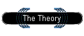

|

|
The Theory
What is OUT OF THE SHADOWS all about?The central assertion of the book OUT OF THE SHADOWS is that light is the second energy force, which to date is little understood. The science of light has to be explored in conjunction with electricity. Light, both black and white, is all around us and indeed within us. Rather than the sun generating light, it is in fact attracting light. Being a giant magnet, it draws in light from the outer reaches of the universe first passing through everything - the planets, earth and its inhabitants. The sun is fuelled by hydrogen, its lifeblood, which it draws into itself, and Vincent Moloney believes it is the proton within hydrogen which gives us light and life. On the 400th anniversary of the death of Sir William Gilbert is it time for science to emerge out of the shadows?
|
|
Copyright 2003 belongs to John Vincent Moloney (DOB 16th July 1940 Dublin, Eire). Author, discoverer, private scientific researcher. All rights reserved. |